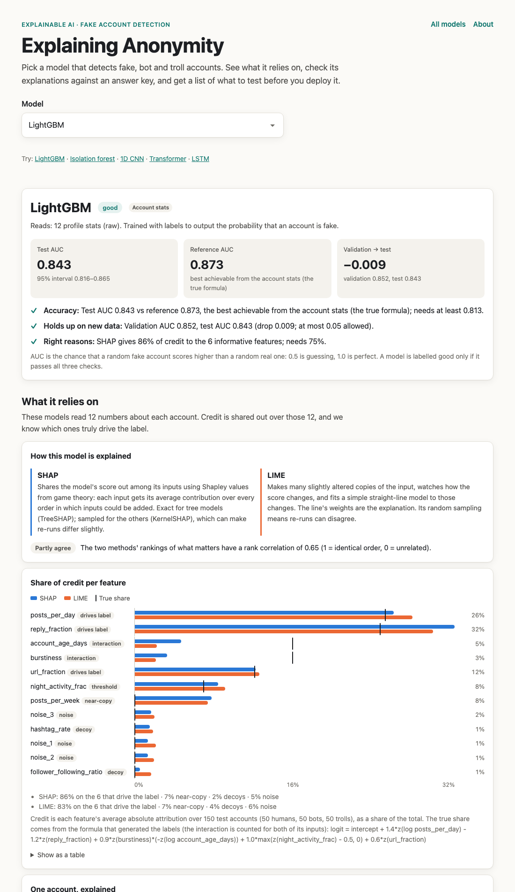

1What the explanations told us
We generated 5,000 accounts where we know what makes an account fake: a formula over 12 account stats, bursty posting, and giveaway words like “giveaway” and “sheep”. So every explanation can be graded right or wrong, not just plausible. Each model is explained with the two methods most used for its type (e.g. SHAP and LIME).
Where SHAP puts the credit (account-stat models)
Share of SHAP credit over 150 test accounts. Good models put most of it on the 6 features that really drive the label; anomaly detectors waste half on noise and decoys.
- Right features, missed subtlety. LightGBM gives 86% of its credit to the real signal, but only 8% to the burstiness × account-age interaction, which carries 19% of it.
- Activity models ignore timing. Shuffling all 168 hours of a week changes the LSTM's AUC by 0.003: it counts posts, not rhythm.
- A shortcut fooled the text models. #trending marked fakes only in training: the transformer fell from 0.998 to 0.873 AUC, and its explanations showed why.
- Methods often disagree. LIME gives different answers on re-runs; one explanation alone can mislead. 8 of 18 models pass all our checks.
2When the fakes fight back
A fresh population of accounts whose bots and trolls disguise themselves, at mild and strong strength. Real users never change, #trending is gone, and every disguise is something a real operator can do cheaply.
Detection (AUC) as the disguise gets stronger
Combined disguise per input type; grey lines are the other models of that type. AUC 1.0 = perfect; the darker line at 0.5 = a coin flip.
| Input | One cheap disguise | AUC |
|---|---|---|
| Account stats | post as often as a real user | 0.85 → 0.70 |
| Hourly activity | post only as much as a real user | 1.00 → 0.49 |
| Post text | misspell the giveaway words (g1veaway) | 0.94 → 0.51 |
3From notebook to pipeline
Explainability results usually live in notebooks, one model at a time: hard to compare, and never turned into a decision. A developer about to deploy a detector needs a verdict and a to-do list, not 40 SHAP plots.

- A verdict from published rules. “Good” only if accurate, stable on new data and its explanations find the real signal. Same rules for every model; nothing hand-written.
- Strengths, weaknesses and a checklist, each item saying why it is there.
- Under attack: a strength slider shows detection and explanations as fakes hide better.
A step in the deployment pipeline
Already code: data generators, evaluation scripts, rules with 66 tests, and a static site rebuilt in seconds. Prototype today covers 18 models on synthetic data; next, letting teams plug in their own model and data.